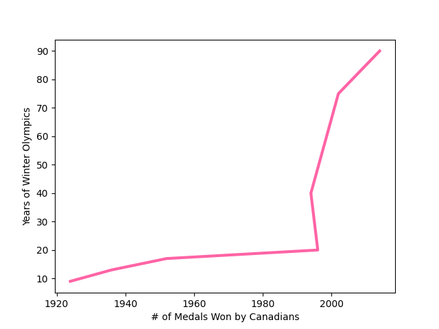
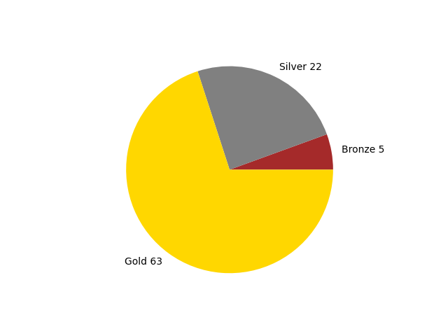
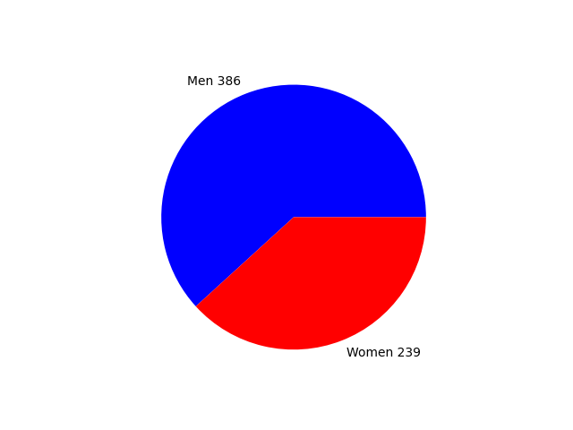
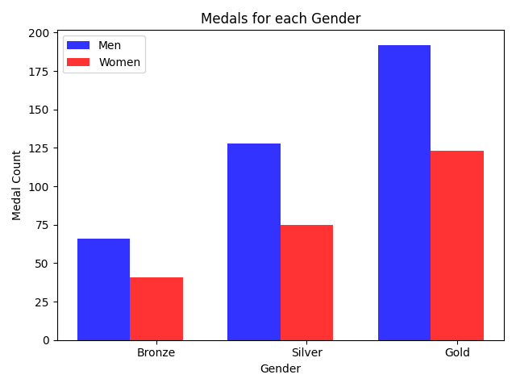
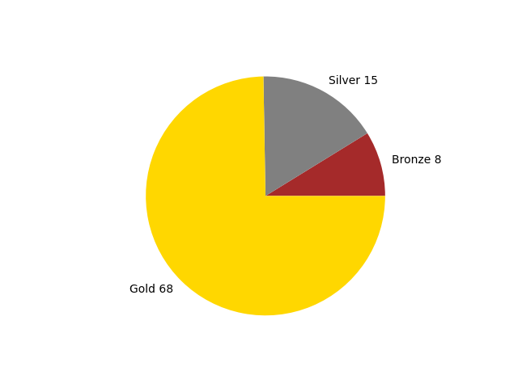
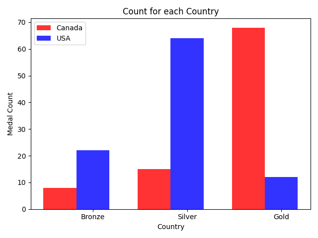

Canada at the Winter Olympics
by Victoria Windle

A summary of how Canada has done at the olympics over the years
Canada Throughout the Years
Medals Canada has Won Throughout the Years
This is a breakdown of medals Canada has won throughout the years!
This chart shows that Canada has slowly been improving until around the 2000s when our atheletes really improved!
Medals in 2014
How did Canada do in it's most recent years at the Olympics?
As the years go by, it seems that Canada is improving! 2014 was no exception!
Canadian Men VS Women
How do men do in the olympics compared to women?
This graph shows that men do better in the olympics than women. We should be pushing more talented women to join the olympics.
Breakdown of Medals Awarded to Men and Women
Are men or women winning the higher prizes?
As well as men winning more prizes in general, they are also winning the bigger prizes.
Vancouver 2010
Did playing in their home country boost morale in Canadian athletes?
Here is a chart with the types of medals the Canadian Team won
2010 was the best year for Canada up until that point. That shows that being home definitely improved morale for the Canadian atheletes.
Breakdown of Medals Awarded to Canada vs USA
Does Canada or America win more medals?
Unfortunately Canada did not manage to come out on top in the 2010 Olympics. The USA is at the top almost every year, but Canada did manage to get more gold medals (if you count the individual hockey medals).
Data was provided by the IOC Research and Reference Service and published by The Guardian's Datablog.